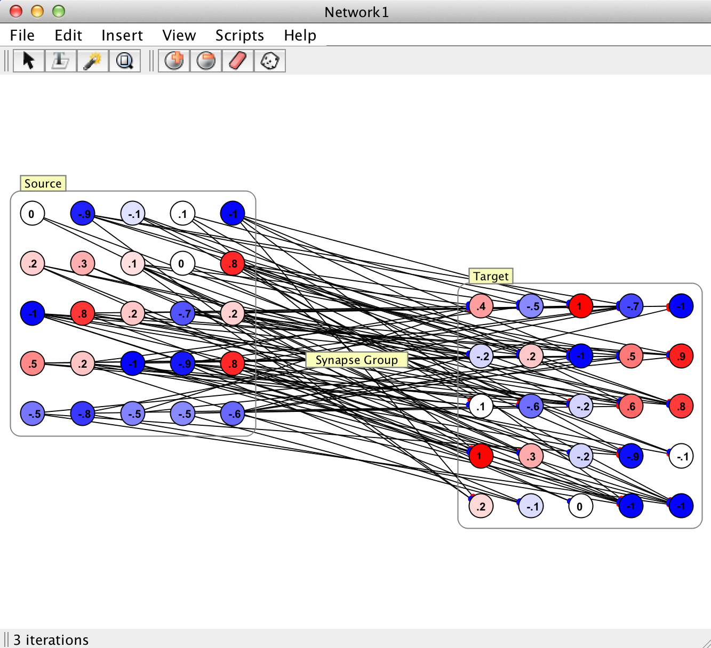
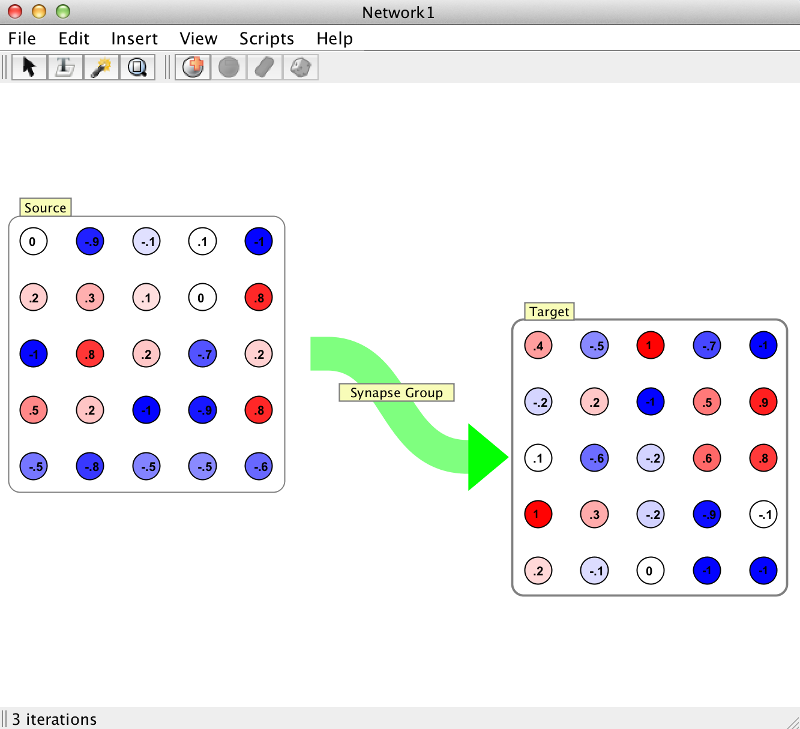

Synapse Group
|  |  |

|

|
Synapse groups represent a unified construct allowing users to interact with the aggregated whole of all the synapses connecting two Neuron Groups. In very large networks, operating on synapses on an indvidual basis would be impractical; Synapse Groups offer a means by which users can manipulate all synapses with common source and target destinations. This includes things like mass manipulation of synapse properties, learning rules, and the display of synaptic strength data. Synapse groups automatically organize and separate synapses by their polarity (i.e. whether or not they are excitatory or inhibitory, as determined by the sign of their weight value). Therefore the excitatory synapses in a synapse group may be manipulated independently of the group's inhibitory synapses.
Pictured to the right is an example of all the different visualizations of synapse groups a user may encounter in Simbrain. Although there are different visualizations for unidirectional, bidirectional, and recurrent synapse groups, it is important to note that fundamentally they all represent the same underlying construct. By right clicking any synapse group interaction box, the user has the ability to "toggle synapse visiblity". Toggling synapse visibility either reveals each of the individual synapses constituting the group (and would look like the first image pictured to the right) if the group is currently being represented by an arrow. If the all the synapses in the group are currently visible toggling synapse visibility will remove all the individual synapse graphics from the network panel and replace them with a single green arrow. For very large synapse groups (> ~10,000) it is not advisable to make each indvidiual synapse visible. In such cases the connectivity structure is obscured by the sheer number of synapses, and worse, the GUI may become slow or unresponsive (depending on the machine and how many synapses are being made visible at once).
Group Properties & Editing Scope
The basic information that synapse groups store and maintain on the group level and about their constituent synapses includes the following:
Basic & Group Level Properties
Group ID: Unique labelling that identifies the group.
Label: Name of group, which is editable by the user.
Population: Number of synapses in the group.
Optimize As Group: An advanced option for speeding up the data representation and update speed of synapse groups. When a synapse group has this option selected, it maintains prototype excitatory and inhibitory synapses, which it pulls data from in order to display information about the group. This is as opposed to iterating over every synapse in the group and checking a particular value to ensure all synapses have the same value. Similarly, when updating the synapse group, iteration over synapses of a given polarity will be skipped entirely if the prototype of that polarity indicates that the synapses of that type are frozen or static. This feature assumes that if the user is working whe synapse groups, then their interaction with individual synapses will be minimal. If a single synapse were to be changed independently of the synapse group's tools for doing so, those changes would not be reflected in the synapse group dialog.
Excitatory Type: The type or update rule governing the excitatory synapses in the group. See the page on synapses for a complete listing.
Inhibitory Type: TThe type or update rule governing the excitatory synapses in the group. See the page on synapses for a complete listing.
Parent: Denotes the parent group, if any.
Source/Target Group: The neuron group which acts as a source(target) to this synapse group. Specifically the whole of the synapses comprising this group represent the efferent(afferent) synapses of the source(target) neuron group, which connects the source group to the target group. In other words a given synapse group mediates the flow of activation between its source and target group. It should be noted that there can be no more than 1 synapse group connecting two neuron groups in a particular direction. That is, there cannot be more than one synapse group with the same source and target neuron group.
Synapse Properties & Type
Synapse groups allow users to edit en masse the properties of the synapses that comprise the group. This includes the basic properties like delay, or bounds, but also the synapse update rule(s) and spike responder(s) and its(their) own independent properties. Since synapse groups segregate synapses by polarity, these changes can be applied to excitatory or inhibitory synapses independently. For a full listing of the properties of synapses which can be changed see the page on synapses. Sufficed to say, synapse groups allow you to manipulate all the synapses in the group as you would an individual synapse.Connection Type
During creation, the user must choose which type of connector should be used to determine how (and what) synaptic connections are made. For a full listing as well as links to the details of how each connection manager functions, see the page on connections.
Synapse groups allow users to edit some properties of the overall connectivity structure of the synapses in the group. In some cases like sparse, users can manipulate the connection density of the synapse group after creation. Otherwise, it is not an option to edit the connection manager post-creation.
Weight Visualization & Manipulation
The synapse group dialog contains two separate entries for the manipulation and visualization of the synaptic strengths of the synapses in the group.
Synapse Adjustment Panel (Histogram)

The first is the synapse adjustment panel, which represents the weights that comprise the group in the form of a histogram. The synapse adjustment panel can be found as a part of the general editing/creation dialog for synapse groups or by right-clicking the group and selecting "Adjust Synapses" from the menu. From here it is possible to assign different probability distributions to the excitatory and/or inhibitory weights in the group. It is also possible to change the ratio of excitatory and inhibitory synapses in the group from here*. The histogram can be made to display weight values for synapses of both or only one polarity, and optionally can overlay the two for a direct comparison.
The histogram panel also displays some basic information about the weights and synapses in the group. Pictured left, one can see that the histogram panel displays the total population as well as the population of synapses of each type. It also displays the mean, median, and standard deviation of the synapse values, which are calculated using the selected polarity(ies). For instance if "Both" is selected these values are calculated using both polarities, assigning negative values to inhibitory weights. If "Overlay" is selected, it will display these values for all synapses in the group, using the absolute value of all inhibitory weight values. Finally if a single polarity is selected it will display those statistics only for the synapses of that polarity, again using absolute values for inhibitory synaptic weights.

Occasionally outside entities like scripts or trainers will alter synaptic weights in a way which changes their polarity without alerting the synapse group. This is easy to spot as the histogram will show that some "excitatory" synapses have a negative value and/or some "inhibitory" synapses have a positive value. In order to reconcile this, the user is given access to a "Revalidate" button located in this panel. Revalidating a synapse group will cause it to iterate over all the synapses in the group and assign them to the correct set based on their polarity (the sign of their strength/weight).
* Although it is not in the GUI as of 3.0, neurons can also possess a polarity. If that is the case then all efferent synapses from that neuron must be of the same polarity as the neuron. In these cases editing the ratio of excitatory to inhibitory synapses is impossible from this panel.
Weight Matrix Viewer
The weight matrix viewer allows users to see and manipulate individual synapse strengths from a table. The table represents the weight matrix which can be extrapolated from the strengths of the synapses in this group. Any individual value can be edited and even randomized using the buttons at the top. The user can also save the values in the table as a .csv file. Loading synapse strengths from a .csv file is possible, but it will destroy the synapses currently in the group. The .csv being loaded must have the same dimensions as the weight matrix of the synapse group. Currently the weight matrix viewer is disabled for synapse groups with more than 10,000 synapses. This is due to the fact that a table of that size would be unnavigable, and of dubious use. At that size individual synapses are much less important. This is also to prevent users from accidentally attempting to view extremely large tables (much greater than 10,000 entries), which can cause the JVM to run out of memory.